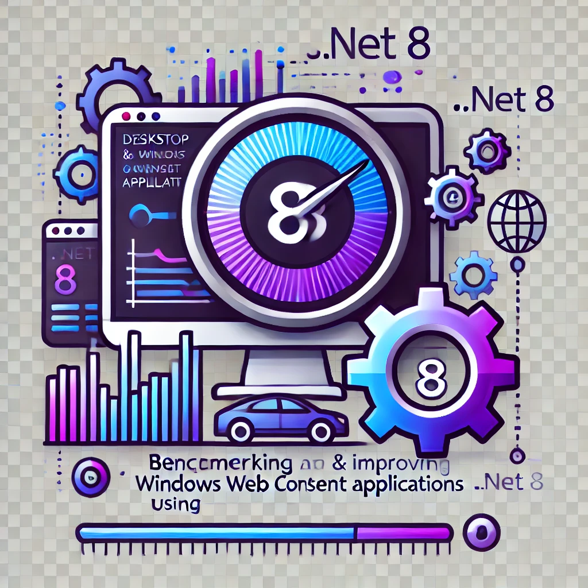

.NET
As a seasoned engineer with a strong background in challenging software types, I excel at crafting robust, performant, and scalable solutions using C# and .NET. With a passion for delivering high-quality results, I always look for innovative ways to improve my craft.
You can find me attending events like KGD .NET meetings and other software development conferences. I'm also an avid enthusiast of cycling and aviation, which helps me maintain a healthy work-life balance.
Contact
Work experience

PERFORMANCE ENGINEER
Benchmarking and improving desktop and windows web client applications (.NET 8)
SOFTWARE ENGINEER
- Warehouse management system (WMS) - monitor and manipulate
devices around the warehouse, communicate with external systems
- Terminal-like RESTful WebApi - support for the organization of
work in the warehouse
SOFTWARE ENGINEER
- End-to-end software solutions for the digitalisation of the
technical core processes of grid and system operators.
- Mentoring and onboarding new employees
SOFTWARE ENGINEER
Desktop (tray) application for receiving sales and stock reports from a selected range
SOFTWARE ENGINEER
The WebApi backend for maintaining employee workloads, including shifts, facilitates payroll accounting by enabling automatic export of working time data to the payroll system.